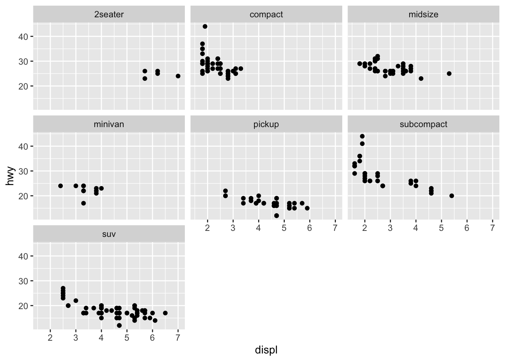
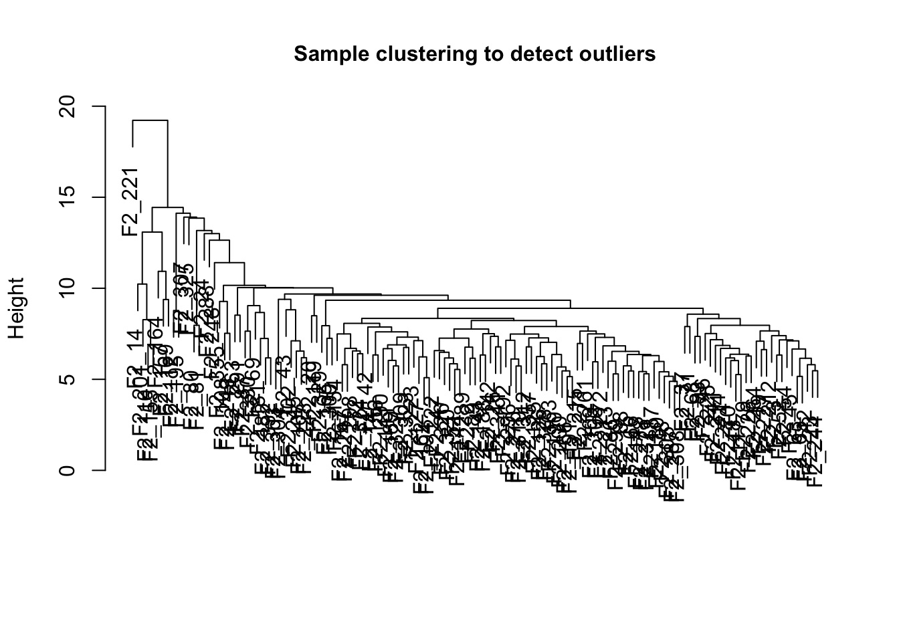
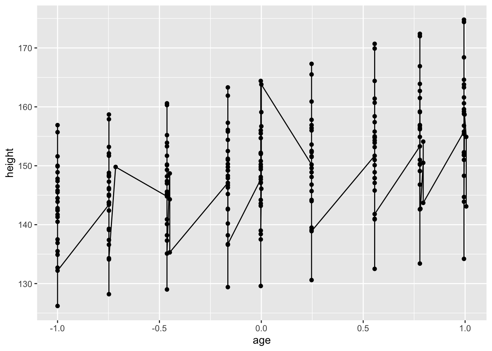

Chapter 7 多组学分析
7.1 WGCNA
使用官方例子进行学习.
https://horvath.genetics.ucla.edu/html/CoexpressionNetwork/Rpackages/WGCNA/Tutorials/
7.2 基础概念
参考这篇文章.
https://www.omicshare.com/class/Public/Upload/video/20170607150629336688.pdf
7.2.1 无尺度网络(scale free network)
基因符合无尺度分布
无尺度网络是指大部分节点的degree(与其相连的node)非常少,而小部分的node与非常多的节点相连.如果使用数学语言进行描述:假设某个基因(node)的degree为m,统计网络中所有的基因的m值,然后以m值大小对基因进行分类,n为基因连接数为m的基因,那么m和n成反比.
7.2.2 模块(module)和模块特征值
模块是指表达模式相似的一组基因.
模块特征值:将一组基因归为一个模块之后,如果我们想对该模块进行定量化表示,就需要使用一个值来进行表示该模块在所有样品中的表达值.这时候一般是使用该模块中的所有基因进行PCA分析,然后使用PC1(主成分1)来表示.
7.2.3 连通性 (Connectivity)
一个基因和其他所有基因的连接程度,一般只在模块内计算,称之为连接度(connectivity)或者degree.对于非权重网络来说,因为edge没有权重,因此有边就是1,没有边就是0,因此degree就是该基因的边的个数.对于权重网络,边是有权重的,因此,每个基因的degree是值所有边的权重之和.
7.2.4 Hub gene
在一个模块中,degree排名靠前的基因,说明其处于枢纽位置,称之为hug gene.
7.3 WGCNA 介绍
全称为weighted gene co-expression network analysis.将研究重点从单个基因转移到模块.计算的两个关键步骤:1)计算基因间的相关性,2)将基因画为模块.
7.3.1 计算基因的相关性
- 计算基因的两两间相关性
\[S_{ij} = |cor(x_i,x_j)|\]
其中\(S_{ij}\)是基因相关性矩阵.
- 无尺度化
也就是对原始的相关性矩阵进行变换.构建相邻矩阵.为了知道两个基因表达是否类似,需要设定一个阈值(threshold),只有当基因之间的相关性大于该阈值,才认为他们之间是相似的,比如0.8.否则不相似,因此,相邻矩阵就是描述两个基因之间是否相似的矩阵.如果使用硬阈值,得到的相邻矩阵应该就是0,1矩阵.但是这种办法的缺点就在于怎么确定阈值?
在WGCNA中,使用的是软阈值的办法,软阈值的思路是通过加权函数,将相邻矩阵中的元素连续化:
\[a_{ij} = power(S_{ij}, \beta) = |S_{ij}|^\beta\]
在这里使用的是power函数.需要设置soft threshold,这时候需要确定power函数的参数β.如何选择合适的β呢?WGCNA的作者提供了两个标准:
- 网络更接近无尺度网络; 2) 尽可能保留连通性信息.
β是WGCNA中第一个关键参数,后面在实际例子中进行详解.
- 基因间表达相关性
上面我们得到了基因间的相邻矩阵,WGCNA为了更准确的表示两个基因间表达的相似性,还引入了另外一个概念,也就是TOM(Topological Overlap Matrix),拓扑重叠矩阵,她代表的是两个基因间相似性等于直接相关+间接相关.
计算公式如下:
\[TOM_{ij} = \frac{\displaystyle \sum_{u}{a_{iu}a_{uj}+a_{ij}}}{min(k_i,k_j)+1-a_{ij}}\]
其中\(\displaystyle \sum_{u}{a_{iu}a_{uj}}\)代表基因i和j.
\(a_{ij}\)代表基因i和基因j的在相邻矩阵中的值.因此,上式中的分子代表的是基因i和j直接联系加上一阶(基因u)基因联系的和.
而\(k_i\)代表基因k的degree,也就是基因k和其他所有直接连接的基因的关系之和.
TOM值的取值范围也是0-1.TOM值也就是WGCNA中最后的weight值.
- 聚类
得到TOM值之后,也就得到了TOM矩阵.然后利用TOM矩阵,就可以对基因进行聚类了.WGCNA中使用的是层级聚类,聚类结束之后,就可以对分支进行剪切区分.得到module.
- 后续生物学意义挖掘
得到模块之后,可以对模块进行生物学意义的挖掘.
7.4 使用WGCNA包进行分析
7.4.1 Data input and cleaning
- 首先读取数据并清洗
library(WGCNA)
library(tidyverse)
femData <-
read.csv("/Users/shenxt/study/WGCNA_test/LiverFemale3600.csv")
dim(femData)## [1] 3600 143## [1] "substanceBXH" "gene_symbol" "LocusLinkID" "ProteomeID" "cytogeneticLoc" "CHROMOSOME"可以看到该数据行是基因,列是样品.一共3600个基因.
然后将基因的描述列去掉.并且将其转置,得到的matrix行是样品,列是基因.
data_exp0 <-
as.data.frame(t(femData[, -c(1:8)]), stringsAsFactors = FALSE)
colnames(data_exp0) = femData$substanceBXH
rownames(data_exp0) = colnames(femData)[-c(1:8)]然后需要去除掉数据(表达矩阵)中的outlier基因和样品.使用的是goodSamplesGenes()函数.
## Flagging genes and samples with too many missing values...
## ..step 1## [1] TRUE该函数用来检查数据中的基因是否符合要求,返回结果是一个list.如果allOK为TRUE,则代表通过检查,如果不是TRUE,则需要手动去除基因和样品:
if (!gsg$allOK){
# Remove the offending genes and samples from the data:
data_exp0 <- data_exp0[gsg$goodSamples, gsg$goodGenes]
}我们可以使用数据对样品进行聚类,然后观察有哪些明显的outlier samples.
sampleTree <- hclust(dist(data_exp0), method = "average")
plot(
sampleTree,
main = "Sample clustering to detect outliers",
sub = "",
xlab = "",
cex.lab = 1,
cex.axis = 1,
cex.main = 1
)我们可以设定剪枝的阈值,比如我们设置为15,然后使用cutreeStatic()函数对样品进行分类.
# Determine cluster under the line
clust = cutreeStatic(sampleTree, cutHeight = 15, minSize = 10)
table(clust)## clust
## 0 1
## 1 134可以明显的看到一个outlier sample(0).可以手动删除,也可以自动的办法.
# clust 1 contains the samples we want to keep.
keepSamples = which(clust == 1)
datExpr = data_exp0[keepSamples,]
nGenes = ncol(datExpr)
nSamples = nrow(datExpr)
nGenes## [1] 3600## [1] 134datExpr就是我们最终用来进行network分析的表达数据.一共3600个基因,134个样品.
下面我们需要读取clinical data.后续需要使用clinical data和模块数据做分析.
## [1] 361 38## [1] "X" "Mice" "Number" "Mouse_ID" "Strain"
## [6] "sex" "DOB" "parents" "Western_Diet" "Sac_Date"
## [11] "weight_g" "length_cm" "ab_fat" "other_fat" "total_fat"
## [16] "comments" "X100xfat_weight" "Trigly" "Total_Chol" "HDL_Chol"
## [21] "UC" "FFA" "Glucose" "LDL_plus_VLDL" "MCP_1_phys"
## [26] "Insulin_ug_l" "Glucose_Insulin" "Leptin_pg_ml" "Adiponectin" "Aortic.lesions"
## [31] "Note" "Aneurysm" "Aortic_cal_M" "Aortic_cal_L" "CoronaryArtery_Cal"
## [36] "Myocardial_cal" "BMD_all_limbs" "BMD_femurs_only"# remove columns that hold information we do not need.
allTraits = traitData[, -c(31, 16)]
allTraits = allTraits[, c(2, 11:36)]
dim(allTraits)## [1] 361 27## [1] "Mice" "weight_g" "length_cm" "ab_fat" "other_fat"
## [6] "total_fat" "X100xfat_weight" "Trigly" "Total_Chol" "HDL_Chol"
## [11] "UC" "FFA" "Glucose" "LDL_plus_VLDL" "MCP_1_phys"
## [16] "Insulin_ug_l" "Glucose_Insulin" "Leptin_pg_ml" "Adiponectin" "Aortic.lesions"
## [21] "Aneurysm" "Aortic_cal_M" "Aortic_cal_L" "CoronaryArtery_Cal" "Myocardial_cal"
## [26] "BMD_all_limbs" "BMD_femurs_only"# Form a data frame analogous to expression data that will hold the clinical traits.
femaleSamples = rownames(datExpr)
traitRows = match(femaleSamples, allTraits$Mice)
datTraits = allTraits[traitRows, -1]
rownames(datTraits) = allTraits[traitRows, 1]
collectGarbage()这时候我们得到的datTraits就是clinicaldata,其中行为样品,列为变量.
## [1] 134下面我们来看看样品的临床数据的热图和样品的基因的聚类.
# Re-cluster samples
sampleTree2 <- hclust(dist(datExpr), method = "average")
# Convert traits to a color representation: white means low, red means high, grey means missing entry
traitColors = numbers2colors(datTraits, signed = FALSE)
# Plot the sample dendrogram and the colors underneath.
plotDendroAndColors(dendro = sampleTree2,
colors = traitColors,
groupLabels = names(datTraits),
main = "Sample dendrogram and trait heatmap")最后,把数据保存下来,准备后续的分析.
7.4.2 Network analysis of liver expression data in female mice
数据都准备好之后,下面就是做网络分析和module detection.
- 首先需要设置R运行环境,主要是要能够进行多线程处理,然后读取数据:
## Allowing parallel execution with up to 6 working processes.# Load the data saved in the first part
lnames = load(file = "/Users/shenxt/study/WGCNA_test/FemaleLiver-01-dataInput.RData")
#The variable lnames contains the names of loaded variables.
lnames## [1] "datExpr" "datTraits"- Automatic network construction and module detection
WGCNA的第一个重要参数,就是构建相邻矩阵是的power函数的参数β.首先需要选择合适的soft-thresholding power
在WGCNA中,使用pickSoftThreshold()函数.一般需要选择一系列candidate powers,然后根据结果进行选择.
注意,这段代码在Rstudio中不能运行,运行出错,需要到R自带IDE或者终端中运行.
# Choose a set of soft-thresholding powers
powers = c(c(1:10), seq(from = 12, to = 20, by = 2))
# Call the network topology analysis function
sft = pickSoftThreshold(datExpr, powerVector = powers, verbose = 5)
save(sft, file = "/Users/shenxt/study/WGCNA_test/sft")load("/Users/shenxt/study/WGCNA_test/sft")
powers = c(c(1:10), seq(from = 12, to = 20, by = 2))
# Scale-free topology fit index as a function of the soft-thresholding power
sft$fitIndices %>%
ggplot(aes(x = Power, y = -sign(slope) * SFT.R.sq)) +
geom_hline(yintercept = 0.9, col = "red") +
geom_point(size = 2, shape = 16) +
ggrepel::geom_text_repel(aes(x = Power, y = -sign(slope) * SFT.R.sq, label = Power),
color = "red") +
labs(x = "Soft Threshold (power)",
y = "Scale Free Topology Model Fit,signed R^2") +
theme_bw() +
theme(axis.title = element_text(size = 15),
axis.text = element_text(size = 13))
# Mean connectivity as a function of the soft-thresholding power
sft$fitIndices %>%
ggplot(aes(x = Power, y = mean.k.)) +
geom_point(size = 2, shape = 16) +
ggrepel::geom_text_repel(aes(x = Power, y = mean.k., label = Power),
color = "red") +
labs(x = "Soft Threshold (power)",
y = "Mean Connectivity") +
theme_bw() +
theme(axis.title = element_text(size = 15),
axis.text = element_text(size = 13))
左边图显示的是power和scale free topology fit的关系,右图显示的是power和mean connectivity的关系,一般选择能够使scale free topology fit达到最大时的最小的power.
这里我们选择6.
确定了power(β)参数之后,后面使用blockwiseModules()函数就可以得到modules.
net <- blockwiseModules(
datExpr,
power = 6,
TOMType = "unsigned",
minModuleSize = 30,
reassignThreshold = 0,
mergeCutHeight = 0.25,
numericLabels = TRUE,
pamRespectsDendro = FALSE,
saveTOMs = TRUE,
saveTOMFileBase = "femaleMouseTOM",
verbose = 3
)## Calculating module eigengenes block-wise from all genes
## Flagging genes and samples with too many missing values...
## ..step 1
## Cluster size 3600 broken into 2108 1492
## Cluster size 2108 broken into 1126 982
## Done cluster 1126
## Done cluster 982
## Done cluster 2108
## Done cluster 1492
## ..Working on block 1 .
## TOM calculation: adjacency..
## ..will use 6 parallel threads.
## Fraction of slow calculations: 0.386114
## ..connectivity..
## ..matrix multiplication (system BLAS)..
## ..normalization..
## ..done.
## ..saving TOM for block 1 into file femaleMouseTOM-block.1.RData
## ....clustering..
## ....detecting modules..
## ....calculating module eigengenes..
## ....checking kME in modules..
## ..removing 1 genes from module 1 because their KME is too low.
## ..removing 1 genes from module 7 because their KME is too low.
## ..removing 1 genes from module 8 because their KME is too low.
## ..removing 1 genes from module 21 because their KME is too low.
## ..merging modules that are too close..
## mergeCloseModules: Merging modules whose distance is less than 0.25
## Calculating new MEs...dataExpr是基因表达数据,行是样品,列基因.
在这里我们选择了soft thresholding power 6, 然后最小module size设置为30.mergeCutHeight用来控制merge module.
maxBlockSize: 是指最大的module的基因数量,默认为5000.
net是最终的分类结果.
下面看一下分类结果.
## [1] "colors" "unmergedColors" "MEs" "goodSamples" "goodGenes" "dendrograms" "TOMFiles"
## [8] "blockGenes" "blocks" "MEsOK"##
## 0 1 2 3 4 5 6 7 8 9 10 11 12 13 14 15 16 17 18
## 99 609 460 409 316 312 221 211 157 123 106 100 94 91 77 76 58 47 34使用颜色来表示module,代表这里面有18个module.标记为0的基因代表没有归为任何一类module.
下面我们把module画出来.
# Convert labels to colors for plotting
mergedColors = labels2colors(net$colors)
# Plot the dendrogram and the module colors underneath
plotDendroAndColors(
net$dendrograms[[1]],
mergedColors[net$blockGenes[[1]]],
"Module colors",
dendroLabels = FALSE,
hang = 0.03,
addGuide = TRUE,
guideHang = 0.05
)
然后将结果保存,用于后续的分析.
7.4.3 Relating modules to external information and identifying important
首先加载上一步产生的数据:
lnames = load(file = "/Users/shenxt/study/WGCNA_test/FemaleLiver-01-dataInput.RData");
#The variable lnames contains the names of loaded variables.
lnames## [1] "datExpr" "datTraits"# Load network data saved in the second part.
lnames = load(file = "/Users/shenxt/study/WGCNA_test/FemaleLiver-02-networkConstruction-auto.RData");
lnames## [1] "MEs" "moduleLabels" "moduleColors" "geneTree" "net"然后我们想要找到和clinical data关系非常紧密的module.对于每个module的来说,都有一个eigengene,也就是其PCA分析的第一主成分,用来代表该module在每个样品中的含量.
这个矩阵除了可以从最终的结果net中直接得到,还可以使用下面的函数moduleEigengenes得到.
# Recalculate MEs with color labels
MEs0 = moduleEigengenes(expr = datExpr, colors = moduleColors)$eigengenes
MEs = orderMEs(MEs0)我们也可以把这个数据和从net中直接得到的对比看一下.
test <- net$MEs
data.frame(colnames(test), colnames(MEs), stringsAsFactors = FALSE) %>%
dplyr::distinct() %>%
dplyr::arrange()## colnames.test. colnames.MEs.
## 1 ME9 MEmagenta
## 2 ME7 MEblack
## 3 ME1 MEturquoise
## 4 ME5 MEgreen
## 5 ME16 MElightcyan
## 6 ME2 MEblue
## 7 ME3 MEbrown
## 8 ME6 MEred
## 9 ME4 MEsalmon
## 10 ME13 MEyellow
## 11 ME18 MElightgreen
## 12 ME11 MEgreenyellow
## 13 ME17 MEgrey60
## 14 ME8 MEpink
## 15 ME10 MEpurple
## 16 ME12 MEtan
## 17 ME14 MEcyan
## 18 ME15 MEmidnightblue
## 19 ME0 MEgreydata.frame(moduleColors, net$colors, stringsAsFactors = FALSE) %>%
dplyr::distinct() %>%
dplyr::arrange()## moduleColors net.colors
## 1 grey 0
## 2 turquoise 1
## 3 grey60 17
## 4 yellow 4
## 5 tan 12
## 6 green 5
## 7 red 6
## 8 black 7
## 9 blue 2
## 10 midnightblue 15
## 11 cyan 14
## 12 magenta 9
## 13 salmon 13
## 14 lightgreen 18
## 15 brown 3
## 16 purple 10
## 17 pink 8
## 18 greenyellow 11
## 19 lightcyan 16然后我们使用WGCNA中的cor函数计算module和clinical data的相关性.
# Define numbers of genes and samples
nGenes = ncol(datExpr)
nSamples = nrow(datExpr)
moduleTraitCor = WGCNA::cor(MEs, datTraits, use = "p")
moduleTraitPvalue = corPvalueStudent(moduleTraitCor, nSamples)下面对correlation进行可视化:
# Will display correlations and their p-values
textMatrix = paste(signif(moduleTraitCor, 2), "\n(",
signif(moduleTraitPvalue, 1), ")", sep = "")
dim(textMatrix) = dim(moduleTraitCor)
par(mar = c(6, 8.5, 3, 3))
# Display the correlation values within a heatmap plot
labeledHeatmap(Matrix = moduleTraitCor,
xLabels = names(datTraits),
yLabels = names(MEs),
ySymbols = names(MEs),
colorLabels = FALSE,
colors = greenWhiteRed(50),
# textMatrix = textMatrix,
setStdMargins = FALSE,
cex.text = 0.5,
zlim = c(-1,1),
main = paste("Module-trait relationships"))从上图中可以看出weight_g跟一些module相关性非常强.
Gene relationship to trait and important modules: Gene Significance and Module Membership
# Define variable weight containing the weight column of datTrait
weight = as.data.frame(datTraits$weight_g)
colnames(weight) = "weight"
# names (colors) of the modules
modNames = substring(names(MEs), 3)
##计算每个基因和module的相关性
geneModuleMembership = as.data.frame(WGCNA::cor(datExpr, MEs, use = "p"))
MMPvalue = as.data.frame(corPvalueStudent(as.matrix(geneModuleMembership), nSamples))
names(geneModuleMembership) = paste("MM", modNames, sep = "")
names(MMPvalue) = paste("p.MM", modNames, sep = "")
##计算基因和weight的相关性
geneTraitSignificance = as.data.frame(cor(datExpr, weight, use = "p"))
GSPvalue = as.data.frame(corPvalueStudent(as.matrix(geneTraitSignificance), nSamples))
names(geneTraitSignificance) = paste("GS.", names(weight), sep = "")
names(GSPvalue) = paste("p.GS.", names(weight), sep = "")Intramodular analysis: identifying genes with high GS and MM
module = "brown"
column = match(module, modNames)
moduleGenes = moduleColors==module
par(mfrow = c(1, 1))
verboseScatterplot(
abs(geneModuleMembership[moduleGenes, column]),
abs(geneTraitSignificance[moduleGenes, 1]),
xlab = paste("Module Membership in", module, "module"),
ylab = "Gene significance for body weight",
main = paste("Module membership vs. gene significance\n"),
cex.main = 1.2,
cex.lab = 1.2,
cex.axis = 1.2,
col = module
)
Summary output of network analysis results
## [1] "MMT00000044" "MMT00000046" "MMT00000051" "MMT00000076" "MMT00000080" "MMT00000102"## [1] "MMT00000887" "MMT00001077" "MMT00001185" "MMT00001486" "MMT00002002" "MMT00002037"## [1] 23388 34## [1] "X" "ID" "arrayname" "substanceBXH"
## [5] "gene_symbol" "LocusLinkID" "OfficialGeneSymbol" "OfficialGeneName"
## [9] "LocusLinkSymbol" "LocusLinkName" "ProteomeShortDescription" "UnigeneCluster"
## [13] "LocusLinkCode" "ProteomeID" "ProteomeCode" "SwissprotID"
## [17] "OMIMCode" "DirectedTilingPriority" "AlternateSymbols" "AlternateNames"
## [21] "SpeciesID" "cytogeneticLoc" "Organism" "clustername"
## [25] "reporterid" "probeid" "sequenceid" "clusterid"
## [29] "chromosome" "startcoordinate" "endcoordinate" "strand"
## [33] "sequence_3_to_5_prime" "sequence_5_to_3_prime"probes = names(datExpr)
probes2annot = match(probes, annot$substanceBXH)
# The following is the number or probes without annotation:
sum(is.na(probes2annot))## [1] 0# Create the starting data frame
geneInfo0 = data.frame(substanceBXH = probes,
geneSymbol = annot$gene_symbol[probes2annot],
LocusLinkID = annot$LocusLinkID[probes2annot],
moduleColor = moduleColors,
geneTraitSignificance,
GSPvalue)
# Order modules by their significance for weight
modOrder = order(-abs(cor(MEs, weight, use = "p")));
# Add module membership information in the chosen order
for (mod in 1:ncol(geneModuleMembership))
{
oldNames = names(geneInfo0)
geneInfo0 = data.frame(geneInfo0, geneModuleMembership[, modOrder[mod]],
MMPvalue[, modOrder[mod]]);
names(geneInfo0) = c(oldNames, paste("MM.", modNames[modOrder[mod]], sep=""),
paste("p.MM.", modNames[modOrder[mod]], sep=""))
}
# Order the genes in the geneInfo variable first by module color, then by geneTraitSignificance
geneOrder = order(geneInfo0$moduleColor, -abs(geneInfo0$GS.weight));
geneInfo = geneInfo0[geneOrder, ]
write.csv(geneInfo, file = "/Users/shenxt/study/WGCNA_test/geneInfo.csv")7.4.4 对module进行分析
在前文中,鉴定出了几个和weight相关的module.
一般需要进行GO注释或者KEGG pathway分析.